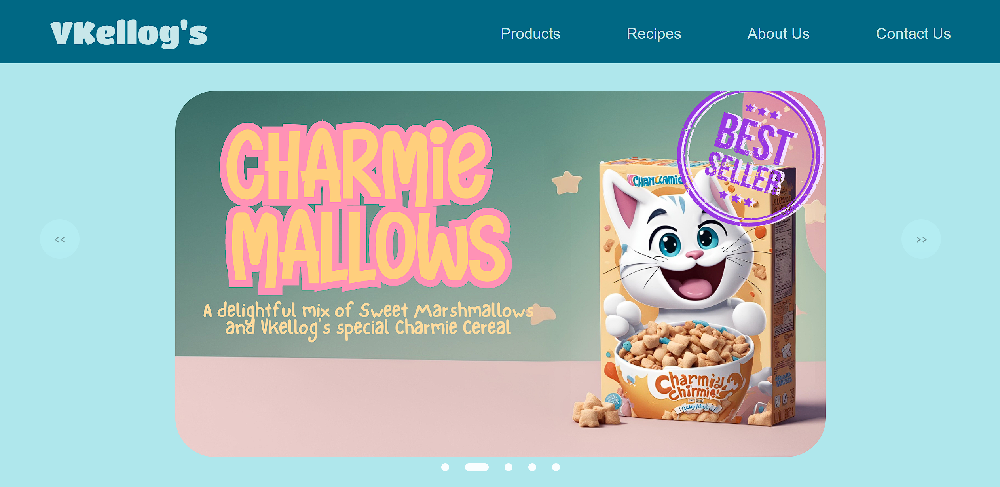
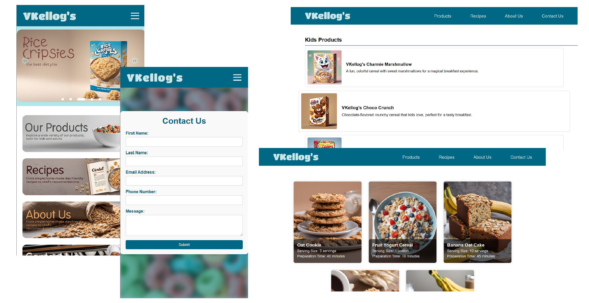

June 2025

VKellogs was my very first web programming project, made for my Human Computer Interaction class final project. V-Kellogs is a catalogue website made for the fictional cereal brand. The website displays the complete product line of the brand, as well as some recipes that could be made with the cereals.

The website features a responsive design that works well on both desktop and mobile devices. It includes a product catalog with detailed descriptions and images, a recipe section, and a contact form for user inquiries.
Creating this website was not an easy process for me, as it required stepping out of my comfort zone in data science. However, as I pushed through and eventually completed the project, I realized that software engineering wasn’t as intimidating as I had expected. This experience has sparked my curiosity, and I’m now eager to explore more of the software engineering world—especially by integrating it with data science in future projects.
Experience the website here: VKellogs website